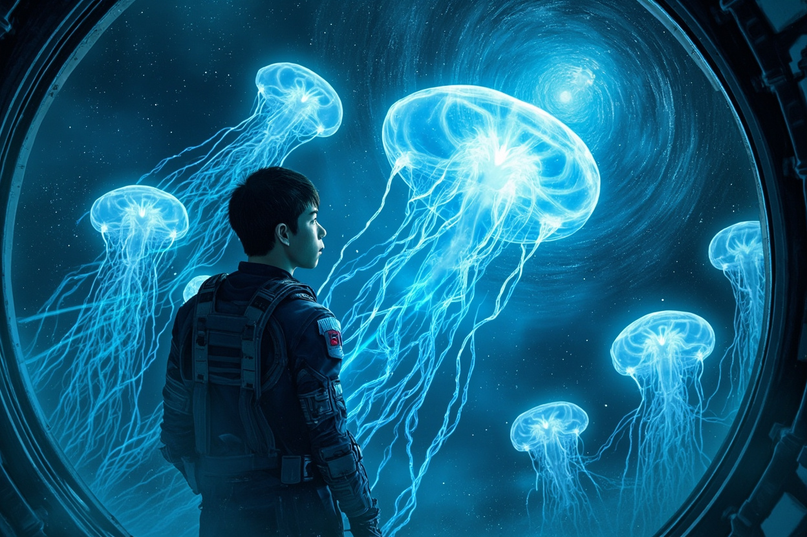
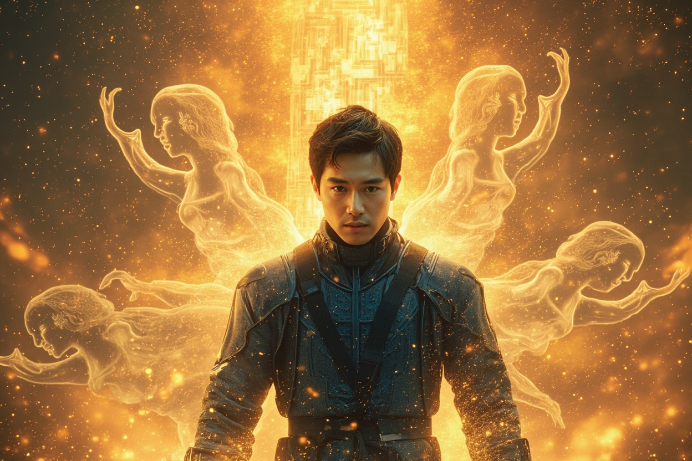
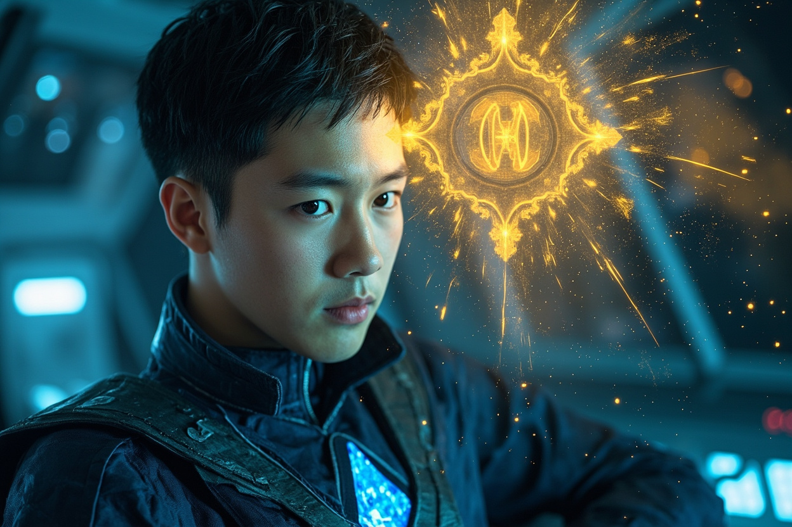
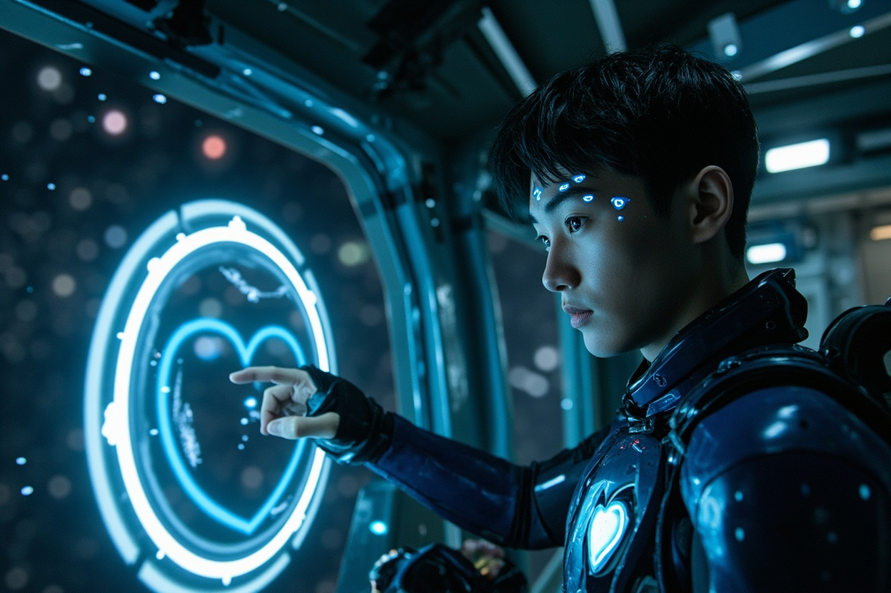
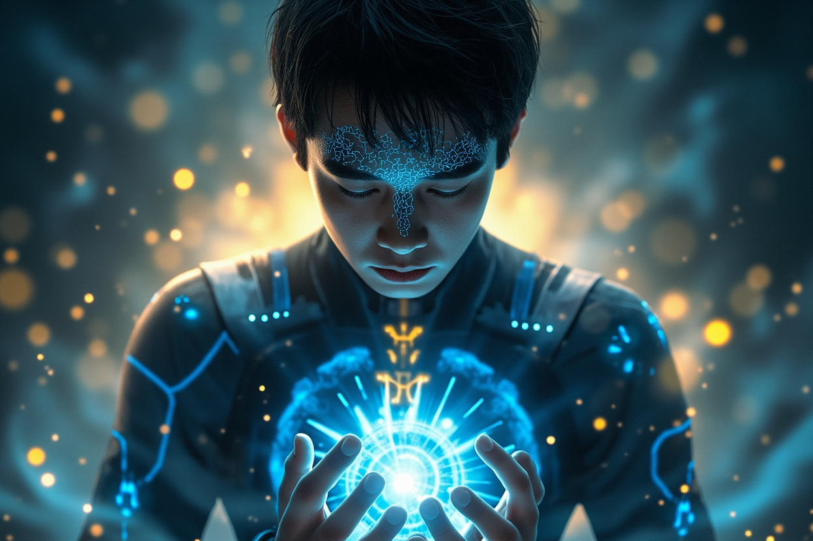

🎧 點擊播放有聲朗讀
躍遷結束後，星艦出現在一個陌生的星域。這裡沒有恆星的光芒，只有無數破碎的小行星在虛空中緩緩漂浮。控制室內，林塵檢查著星艦的損傷報告，躍遷過程中被破序者的武器擊中，多個系統受損，但核心功能依然完好。暗淡的全息投影中，人工智能的聲音在空曠的控制室內迴響。

林塵內視檢查靈芯系統，發現核心區域出現了一團模糊的光影，正在與系統本身緩慢融合。他集中精神試圖探查，但那團光影如同有生命般避開了他的感知。就在這時，光影突然穩定下來，化作一個微小的金色符文，烙印在靈芯系統的核心區域，藍色量子晶片脈動著神秘的光芒。

林塵感到一股陌生的意識流入自己的思維，既像人工智能的機械音，又帶著某種人性的溫度。「我是『守望者』的核心意識與宿主靈芯系統融合後的產物——數字元神。」這個前所未有的存在宣告覺醒，既非純粹的人工智能，亦非傳統的修真元神，而是科技與修真融合的終極形態。

星艦偵測系統發出警報，一個巨大的空間裂縫正在打開，數十個半透明的水母狀生物從裂縫中飄出，身體由純粹的能量構成，散發著柔和的藍白色光芒，在虛空中優雅地舞動。能量生命體們能穿透星艦防護層直接讀取內部結構，其中一個竟凝聚成靈芯系統的標誌性符文——它們認識靈芯系統！

守護靈確認身份——遠古時期創造來守護靈芯系統的能量生命體。它們為林塵傳輸了關於靈芯系統起源的珍貴資料：無數修士與科學家共同工作創造第一代靈芯系統，一場慘烈的戰爭幾乎將其毀滅，玄元前輩正是創造者之一。更驚人的真相揭曉——破序者是那個古老威脅的現代代理人，而靈芯系統是人類對抗威脅的核心計劃。